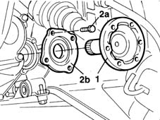

2110D50 single flange on differential - r + r with drive shaft removed
- Path
- Procedures > 21 GEARBOX > 2110 MANUAL GEARBOX AND DIFFERENTIAL > 2110D manual gearbox differential > 2110D50 single flange on differential - r + r with drive shaft removed
- Kind
- repair procedure (removal / refitting; the operation number is the code)
- Applies to
- engines: 1.9 JTD 8V; all production periods
- Interactive page
- https://sloeber94.github.io/elrnDB-fMltpl/en/#/2891542
Applies to: engines: 1.9 JTD 8V; all production periods
 Removing
Removing
 Refitting
Refitting1. Using a suitable lever, prise off the drive shaft inner mounting shaft from the differential.
2. Undo the fixing bolts (2a) and remove the flange (2b) complete with oil seal.
Remove the adjustment shim.

Applies to: engines: 1.9 JTD 8V; all production periods
Refitting
RemovingFit the adjustment shim.
Fit the flange, tightening the bolts to torque.
 | Fastening | Component | Ø | Value (daNm) |
|---|---|---|---|---|
- | Bolt | GEARBOX INTERNAL LINKAGE | M10 x 1.25 | 4.9 |
Fit the drive shaft inner mounting shaft onto its seat on the differential.